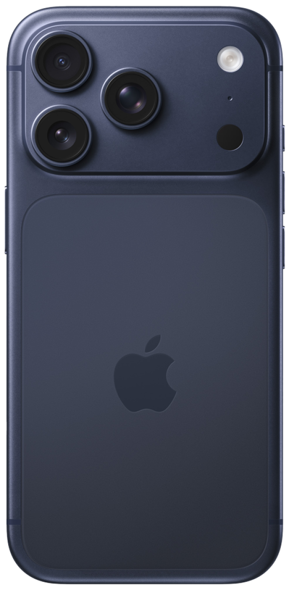

iPhone 17 Pro Max je zatím nejvýkonnější iPhone v historii. Čip A19 Pro posouvá hranice toho, co smartphon dokáže – zpracovává Apple Intelligence úlohy přímo v zařízení, rychleji a soukroměji než kdykoli předtím.
Displej 6,9" je největší, jaký Apple kdy do iPhonu dal. Tenké rámečky vytvářejí dojem, že držíš čistý displej bez okrajů. Přesto je telefon překvapivě lehký díky novému hliníkovému rámu.
Fotoaparát zvládne natáčet 4K video ve 120 fps – filmová kvalita přímo z kapsy. Camera Control tlačítko ti dá přímý přístup ke kameře i nastavení expozice jediným prstem.
| Čip | A19 Pro |
| Displej | 6,9" Super Retina XDR, 120 Hz |
| Fotoaparát | 48 MP hlavní + 48 MP ultraširokýúhlý + teleobjektiv 5x |
| Baterie | Až 33 hodin přehrávání videa |
| Materiál | Hliník + sklo |
| Cena od | ~36 990 Kč |

iPhone 17 Pro přináší výkon čipu A19 Pro do kompaktnějšího těla. Je to první Pro iPhone s hliníkovým rámem místo titanu – Apple se rozhodl pro lehčí a modernější materiál, který vypadá i lépe.
Apple Intelligence je plně integrovaná do systému – píše za tebe, sumarizuje zprávy, upravuje fotky na profesionální úroveň jedním klepnutím a ovládá aplikace přirozeným jazykem.
| Čip | A19 Pro |
| Displej | 6,3" Super Retina XDR, 120 Hz, Always-On |
| Fotoaparát | 48 MP hlavní + 48 MP ultraširokýúhlý + teleobjektiv 5x |
| Baterie | Až 27 hodin přehrávání videa |
| Materiál | Hliník + sklo |
| Cena od | ~33 990 Kč |

iPhone 17 je nejdostupnější nový iPhone a přitom nabízí více než kdykoli předtím. ProMotion 120 Hz displej – dříve výsada Pro modelů – je teď dostupný i zde. Rolování je plynulejší, animace hladší, hry živější.
Dual Fusion fotoaparát kombinuje dva 48 MP senzory pro výjimečné výsledky za jakéhokoli světla. Selfie kamera dostala velký upgrade a videophovory vypadají lépe než na čemkoli jiném.
| Čip | A19 |
| Displej | 6,3" Super Retina XDR, 120 Hz |
| Fotoaparát | 48 MP Dual Fusion |
| Baterie | Až 22 hodin přehrávání videa |
| Materiál | Hliník + Ceramic Shield |
| Cena od | ~25 990 Kč |

iPhone 16 Pro Max byl první iPhone navržený od základu pro Apple Intelligence. Čip A18 Pro přinesl hardwarové akcelerátory pro AI přímo na čipu – vše se zpracovává lokálně, bez odesílání dat na server.
Obrovský 6,9" displej s dosud nejtenčími rámečky v historii iPhonu. Výdrž baterie až 33 hodin z něj dělá iPhone, který přežije i ten nejdelší pracovní den bez nabíječky.
| Čip | A18 Pro |
| Displej | 6,9" Super Retina XDR, 120 Hz |
| Fotoaparát | 48 MP hlavní + 48 MP ultraširokýúhlý + teleobjektiv 5x |
| Baterie | Až 33 hodin přehrávání videa |
| Materiál | Titan + sklo |
| Cena od | ~38 990 Kč |
iPhone 16 Pro přinesl Camera Control – fyzické tlačítko na boku telefonu, které ti dá přímý přístup ke kameře, možnost nastavit expozici přejetím prstu nebo spustit video nahrávání jediným stiskem. Je to jako mít profesionální ovládání fotoaparátu vždy po ruce.
Čip A18 Pro zvládá Apple Intelligence úlohy bleskurychle – přepisuje poznámky, navrhuje odpovědi na zprávy, edituje fotky na profesionální úroveň. Vše soukromě přímo v telefonu.
| Čip | A18 Pro |
| Displej | 6,3" Super Retina XDR, 120 Hz |
| Fotoaparát | 48 MP hlavní + 48 MP ultraširokýúhlý + teleobjektiv 5x |
| Baterie | Až 27 hodin přehrávání videa |
| Materiál | Titan + sklo |
| Cena od | ~32 990 Kč |

iPhone 16 Plus kombinuje velký displej, dlouhou výdrž baterie a podporu Apple Intelligence za přijatelnou cenu. Dynamic Island, Camera Control a čip A18 – to vše ve velkém těle, které vydrží celý den a víc.
| Čip | A18 |
| Displej | 6,7" Super Retina XDR |
| Fotoaparát | 48 MP hlavní + 12 MP ultraširokýúhlý |
| Baterie | Až 27 hodin přehrávání videa |
| Materiál | Hliník + sklo |
| Cena od | ~27 990 Kč |
iPhone 16 je první základní iPhone navržený pro Apple Intelligence. Čip A18 přináší výkon, který dříve patřil jen Pro modelům. Camera Control přidává fyzické ovládání kamery, které oceníš při focení i natáčení videa.
Dynamic Island zobrazuje notifikace, přehrávání hudby nebo navigaci živě a interaktivně. USB-C konektor zajistí kompatibilitu s ostatními zařízeními.
| Čip | A18 |
| Displej | 6,1" Super Retina XDR |
| Fotoaparát | 48 MP hlavní + 12 MP ultraširokýúhlý |
| Baterie | Až 22 hodin přehrávání videa |
| Materiál | Hliník + sklo |
| Cena od | ~24 990 Kč |

iPhone 15 Pro Max je první iPhone podporující rozhraní USB 3, což znamená obrovský skok v rychlosti přenosu dat a rychlejší profesionální pracovní postupy než kdykoli předtím. Nový konektor USB-C umožňuje nabíjet Mac nebo iPad stejným kabelem, který používáš k nabíjení iPhonu. Sbohem, změť kabelů.
Tělo je vyrobeno z titanu Grade 5 – stejného materiálu, jaký NASA používá pro vesmírné mise. Je to nejlehčí Pro Max model v historii iPhonu, přesto nejodolnější.
Fotoaparát s 5x optickým přiblížením ti přiblíží vzdálené objekty jako nikdy předtím. Ať fotíš koncert, sport nebo přírodu, dostaneš snímky, které dříve vyžadovaly profesionální vybavení.
| Čip | A17 Pro |
| Displej | 6,7" Super Retina XDR, 120 Hz |
| Fotoaparát | 48 MP hlavní + 12 MP ultraširokýúhlý + 12 MP teleobjektiv 5x |
| Baterie | Až 29 hodin přehrávání videa |
| Materiál | Titan Grade 5 |
| Připojení | USB-C (USB 3) |
| Cena od | 33 990 Kč |
iPhone 15 Pro je nejlehčí Pro iPhone v historii. Titanový rám udělal z tohoto telefonu výjimečně odolné a přitom lehké zařízení, které se pohodlně drží v jedné ruce celý den.
Čip A17 Pro přináší výkon, který předčí většinu notebooků. Hry jako Assassin's Creed Mirage nebo Resident Evil Village běží přímo na iPhonu v plném grafickém detailu – žádná konzole ani PC nepotřeba.
Nové Akční tlačítko nahrazuje přepínač tichého režimu. Můžeš si ho nastavit na cokoliv – spuštění kamery, baterky, překladače nebo vlastní zkratky. Telefon se přizpůsobí tobě, ne ty jemu.
| Čip | A17 Pro |
| Displej | 6,1" Super Retina XDR, 120 Hz |
| Fotoaparát | 48 MP hlavní + 12 MP ultraširokýúhlý + 12 MP teleobjektiv 3x |
| Baterie | Až 23 hodin přehrávání videa |
| Materiál | Titan Grade 5 |
| Připojení | USB-C (USB 3) |
| Cena od | 29 990 Kč |

iPhone 15 přináší Dynamic Island – živý interaktivní prostor kolem průstřelu displeje, který zobrazuje upozornění, přehrávání hudby, navigaci nebo časovač bez nutnosti otevírat aplikace. Jednoduše se podíváš a víš vše, co potřebuješ.
Poprvé v historii standardní řady iPhonu přichází USB-C konektor. Jeden kabel pro iPhone, iPad, Mac i sluchátka. Konec donglů a adaptérů.
Nový 48 MP fotoaparát zachytí neuvěřitelné detaily i za šera. Noční režim je nyní dostupný i pro ultraširokýúhlý objektiv, takže temné scény vypadají přirozeně a ostře.
| Čip | A16 Bionic |
| Displej | 6,1" Super Retina XDR |
| Fotoaparát | 48 MP hlavní + 12 MP ultraširokýúhlý |
| Baterie | Až 20 hodin přehrávání videa |
| Materiál | Hliník + sklo |
| Připojení | USB-C |
| Cena od | 24 990 Kč |
iPhone 15 Plus je pro ty, kdo chtějí velký displej a rekordní výdrž baterie. S až 26 hodinami přehrávání videa je to iPhone, který vydrží celý den i víc – bez nabíječky v kapse.
Velký 6,7" displej je skvělý pro sledování filmů, hraní her nebo práci s dokumenty. Všechno vidíš ve větším, jasnějším a živějším obraze.
Sdílí stejné fotoaparáty a funkce jako iPhone 15, takže nepřicházíš o nic z toho, co dělá iPhone 15 tak skvělým – jen dostaneš víc prostoru a víc výdrže.
| Čip | A16 Bionic |
| Displej | 6,7" Super Retina XDR |
| Fotoaparát | 48 MP hlavní + 12 MP ultraširokýúhlý |
| Baterie | Až 26 hodin přehrávání videa |
| Materiál | Hliník + sklo |
| Připojení | USB-C |
| Cena od | 27 490 Kč |

iPhone 14 Pro Max přinesl dvě revoluční novinky najednou – Always-On displej a Dynamic Island. Always-On displej zobrazuje čas, upozornění a widgety i když je telefon zamčený, aniž by výrazně ubíral baterii.
Dynamic Island bylo poprvé představeno právě na tomto modelu. Průstřel displeje se proměnil v živý interaktivní prostor, který Apple přetavil z nevyhnutelného kompromisu na ikonickou funkci.
Fotoaparát skočil z 12 MP na 48 MP – největší skok v historii iPhonu. Fotky jsou plné detailů, které dříve vyžadovaly zrcadlovku.
| Čip | A16 Bionic |
| Displej | 6,7" Always-On Super Retina XDR, 120 Hz |
| Fotoaparát | 48 MP hlavní + 12 MP ultraširokýúhlý + 12 MP teleobjektiv |
| Baterie | Až 29 hodin přehrávání videa |
| Materiál | Nerezová ocel + sklo |
| Připojení | Lightning |
| Cena od | 27 990 Kč |

iPhone 14 přinesl funkce, které mohly jednoho dne zachránit život. Crash Detection automaticky detekuje vážnou dopravní nehodu a zavolá záchranáře, i když ty to nemůžeš udělat sám. Nouzové SOS přes satelit ti umožní přivolat pomoc i tam, kde není žádný signál.
Přední fotoaparát dostal autofocus poprvé v historii – selfie jsou ostřejší a video hovory vypadají lépe než kdy jindy.
iPhone 14 je skvělou volbou pro každého, kdo chce spolehlivý a výkonný iPhone za rozumnou cenu.
| Čip | A15 Bionic |
| Displej | 6,1" Super Retina XDR |
| Fotoaparát | 12 MP hlavní + 12 MP ultraširokýúhlý |
| Baterie | Až 20 hodin přehrávání videa |
| Materiál | Hliník + sklo |
| Připojení | Lightning |
| Cena od | 19 990 Kč |
Nezávislá encyklopedie o iPhonech. Všechny informace přehledně a na jednom místě.
Instagram | Facebook | YouTube© 2026 Apple Info. Všechna práva vyhrazena | Ochrana soukromí | Podmínky použití